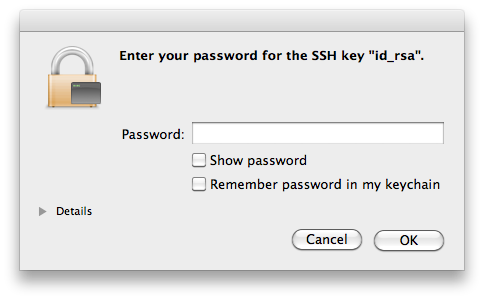

Using SSH keys
A SSH connection can be established using a password -the password of the user's account on the SSH host-. This is the basic setting, and it requires the user to enter the password on each access.
A more convenient approach can be achieved using SSH keys. Basically, a SSH key is generated, that includes in fact a pair of cryptographic keys -a public encryption key and a private decryption key. The public one is transferred to any host where a SSH session is required. The private one remains on the client machine or machines, and the user should ensure its security. If correctly setup, the user can now access all the servers without introducing any passwords. Definitely very convenient.
There are many configurations possible to enable SSH keys. On the client side, the default configuration requires:
- To have, on each account supporting a SSH connection, a ~/.ssh folder that must be chmod 700: that is, only accessible by the account's owner.
- To store on this folder the SSH key, named id_rsa (will be named id_dsa if the SSH key's type is DSA). Furthermore, this file must be chmod 600: that is, only accessible by the account's owner.
The command
ssh-keygen -t rsa -b 4096
achieves these requirements, producing a 4096 bits RSA key: it creates by default the file ~/.ssh/id_rsa with the right permissions, and, if missing, it creates also the ~/.ssh folder, chmodded to 700. When this command is executed, the user is prompted to enter a passphrase: although is not mandatory to introduce one, it is sensible to have one in most cases.
In fact, the ssh-keygen creates two files: ~/.ssh/id_rsa, the private key, and ~/.ssh/id_rsa.pub, that is the public key. This public key can be sent to as many hosts as required -no security concerns here-.
On the server side, the default configuration requires:
- To have, on each account supporting a SSH connection, a ~/.ssh folder that must be chmod 700: that is, only accessible by the account's owner.
- To store on this folder a file called authorized_keys, also chmod 600. This file contains each accepted public key, one per line. The format of this file allows to specify options associated to each key, to restrict the associated SSH connection or to perform specific actions when the connection is established.
So, very basically, the process is:
- If you still have no SSH key, create one -using ssh-keygen-, and store the private key as ~/.ssh/id_rsa on the client machine or machines.
- Include the public key in the file ~/.ssh/authorized_keys of each account and server
where it is required the SSH connection:
cat id_rsa.pub >> ~/.ssh/authorized_keys
- Ensure that the permissions are correct: chmod 700 on the ~/.ssh folder, and chmod 600 on the folder's files.
Once this setup is in place, the exact behaviour depends on the particular linux distribution. The objective is to issue the SSH connection command and not to have to enter the passphrase on each attempt. This can be achieved, of course, by using SSH keys without passphrase, which is difficult to recommend on most scenarios. The alternative is based on the ssh_agent implementation, that provides a secure way of handling the passphrase(s). In OsX, the ssh-agent is integrated with the keychain, so each time the passphare is required, the Keychain will check if it already knowns the passphrase. If not, a dialog will appear, looking as:

So, the first time the SSH access is required, the Keychain mechanisms in Os X will kick in, presenting that dialog. If the password is added to the keychain, it will not be requested any longer: objective achieved.
Similar mechanisms exist in linux, like the KWallet in KDE or the GNOME keyring. From the command line is definitely possible handling the SSH certificates:
ssh-add
Adds the private key to the keyring, asking for the passphrase if the key has one. This command requires to have the ssh-agent running -and the environment variable SSH_AUTH_SOCK correctly setup, but this will normally be the case (otherwise, starting ssh-agent automatically displays the required environment variables to set).
It is also possible to add the keys to the ssh-agent automatically on each session, just by adding to your ~/.xsession file the line ssh-add, although this requires to have the ssh-askpass package installed.
ssh-agent: use it
So, to be able to so SSH connections without entering each time a password, it is needed to use SSH keys. And to use SSH keys without entering a passphrase, it is needed to use the ssh-agent (or Keychain in OsX). And the result is not only a higher convenience, but an increased security. Quoting from this weblog entry: when you authenticate to a text-based channel on a remote server, you should never have to type anything about that authentication into the channel that will eventually be controlled by the remote server.
Of course, the security is only increased if some conditions are met: once the keyring is accessible, anybody with access to the login session can reach the SSH servers without entering any passwords or passphrase. For example, a laptop with sensible SSH login keys should remain always secure -blocking sessions on standby, or after some idle time-.
Multiple SSH keys
In principle, there is need for one single SSH key. But although it is overkilling having multiple keys for multiple services or hosts, like, for example, one for each subversion or git repository's server, there are still many scenarios where having multiple keys is the most sensible action.
One such scenario is to configure a SSH key without a passphrase to permit automation of operations over SSH, but most commonly is due to security concerns: a laptop could use a key that has granted access to only a subset of all the services or servers, or with granted access to accounts with lower permissions.
To generate SSH keys on specific files, the flag -f is used on ssh-keygen:
ssh-keygen -t rsa -b 4096 -f KEYS_FILE -C COMMENT
The generated public key is added to the servers in the same way; the ~/.ssh/authorized_keys file in the server can have multiple keys associated to the same client. For the client to use this new key instead of the default one, it must do so explicitly, and the way to do so depends in fact on the used tool. To open a SSH connection using ssh:
ssh -i KEYS_FILE user@host
Or just using an alias:
alias ssh="ssh -i KEYS_FILE"
If the key is used for a subversion access via SSH, an environment variable can be set:
export SVN_SSH="ssh -i KEYS_FILE user@host"
It is also possible to configure SSH to directly use multiple keys, by providing a file ~/.ssh/config. This file can contain multiple entries such as:
IdentityFile ~/.ssh/id_rsa.home IdentityFile ~/.ssh/id_rsa.work
Now, both keys are used all the time; even better, it is possible to define the key selection based on the server, like:
Host *.coderazzi.net IdentityFile ~/.ssh/id_rsa.coderazzi Host *.coderazzi.com IdentityFile ~/.ssh/id_rsa.coderazzi.com User coderazzi Host *.codingnight.net IdentityFile ~/.ssh/id_rsa.cn User coderazzi Port 5623
Maintenance
SSH keys maintenance includes the change of passphrases, and the renewal of keys
For the same reasons that it is recommended to change periodically your account's password[s], the passphrases in the SSH keys should be also periodically changed, using the flag -p on ssh-keygen:
ssh-keygen -p [-f KEYS_FILE]
Changing the passphrase does not impact the public key, it only changes the private key. So, if there are reasons to believe that the private key is compromised, changing the passphrase is definitely not enough: new keys should be generated, and the existing public key replaced on all related servers.
References: O'Reilly site wikipediaTo setup the communication channel on a SSH session, the server provides its own public key to the client; if this key is known and accepted, it will be used to encrypt the communications from the client to the server. That is, any transmitted information is encrypted using the public key of the other party; only the holder of the private key (the other party) can decrypt that information. (The reality is a little more complex, using session keys that are shared by both parties, and that are negotiated using the original server/client keys).
The process to accept the server key depends on each system; in Linux (or OsX), the file ~/.ssh/known_hosts contain the known public keys of accepted servers; when a new key is received, the user will be prompted to accept or refuse it. If accepted, the client sends then its own public key to the server.
SSH keys can be DSA or RSA; with DSA being limited to 1024 bytes, and providing no real additional security than RSA, seems a better idea to opt for RSA keys. The default is 2048 bytes, but using 4096 bytes can be sensible -depending on the target usage, of course-. http://oroborosx.sourceforge.net/remotex.html http://muffinresearch.co.uk/archives/2010/02/08/howto-ssh-into-virtualbox-3-linux-guests/ http://www.debian.org/devel/passwordlessssh The authenticity of host '192.168.0.21 (192.168.0.21)' can't be established. RSA key fingerprint is c5:51:18:c7:68:35:32:f0:c8:6b:58:86:4e:a7:85:26. Are you sure you want to continue connecting (yes/no)?